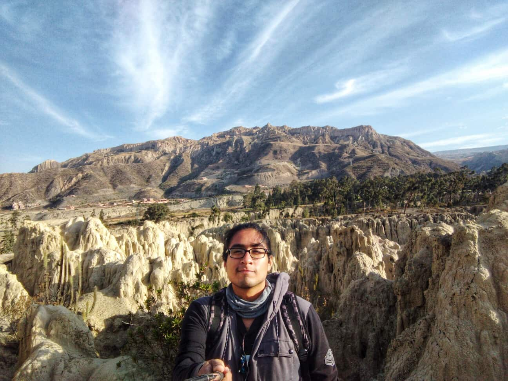

Luis Jared Viera Mesones | WDD 130.

My full name is Luis Jared Viera Mesones. I'm From Piura, Perú, I'm 31 years old working full time as a sub administrator in a Caterpillar store.
I'm currently studying in BYU Pathway to become a software developer
My hobbies are sports, swimming, soccer, volleyball, playing video games and relaxing with my 3 cats.